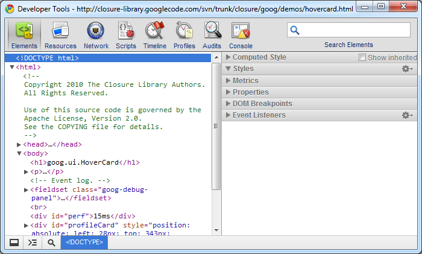

Introduction
Introduction
- The instructor
- The audience
- The goal
Content
This is an introductory course
Emphasis is given to present filtered and useful information instead of being complete.
Opinionated contents
We strive to include the most useful tools for the task at hand.
The contents of this course are largely based on opinions from the authors.
About these slides...
- Mouse wheel, PageDown or space for next slide... or fragment
- Mouse wheel or PageUp for previous slide or fragment
About these slides...
- Arrow keys also work, but
→ignores nested slides! - Press z for thumbnails mode, then press z or click a slide to exit it.
- Also, ESC triggers a 3D overview mode.
A-grade browsers
| Internet Explorer | 6.0 | 7.0 | 8.0 | 9.0 | 10.0 |
|---|---|---|---|---|---|
| Chrome * | Latest stable | ||||
| Firefox * | Latest stable | ||||
| Safari | Latest stable (desktop) | iOS 4.* | iOS 5.* | iOS 6.* | |
| WebKit | Android 2.2.* | Android 2.3.* | Android 4.* | ||
Google Apps support
- Latest Chrome
- Last two releases of
- Firefox
- IE
- Safari
- This means no support for IE 8!
Wikipedia support
Any browser with >1% market share
This (barely) includes IE6
Introduction to the tools
- Chrome
- Sublime Text Editor 2
Chrome
Open dev console (F12 and then ESC)
Chrome console preferences
Dock to right
Override user agent
Responsive design
Override device metrics
Elements tab
Persistence of the changes in the sources tab
CSS inspector
Alt + Up/Down: ±0.1
Up/Down: ±1
PgUp/PgDown: ±10
Shift + PgUp/PgDown: ±100
Inline HTML edition
Resources tab
Resources tab
- Resources
- HTML5 database
- LocalStorage
- Cookies
- Offline cache
Network tab

Network tab
Measure performance
Trace cache behavior (enable / disable cache or Shift+Ctrl+N)
Follow redirects
Network tab
Blue line = DOMContentLoaded event
Red line = Load event
Network tab
Multiple filters:
All, Documents, Stylesheets, Images, Scripts, XHR (AJAX requests), Fonts, WebSockets and Others
Network tab
Sources tab
Pretty print
Shortcuts
- Ctrl + O: go to source
- Ctrl + G: go to line
- Shift + Ctrl + O: Go to member
- ?: see help
Sources tab
Call stack view

Console tab

Other tabs
Timeline

Other tabs
Timeline
Other tabs
Timeline
Skins
Change your skin for Chrome Developer Tools:
Sublime Text Editor
Package control
http://wbond.net/sublime_packages/package_controlHighly customizable
Default Vs User settings configuration
Use user always!
Project files
{
"folders":
[
{
"path": ".",
"folder_exclude_patterns": ["node_modules"]
}
],
"settings":
{
"tab_size": 2,
"translate_tabs_to_spaces": true,
"word_wrap": "true"
}
}
Build system
"build_systems" : [
{
"name": "parse_slides",
"working_dir": "$project_path",
"cmd": ["bin/jade-build", "$file"],
"selector": "source.jade"
},
{
"name": "compile_LESS",
"working_dir": "$project_path",
"cmd": [
"node_modules/less/bin/lessc", "less/style.less", "generated/assets/css/style.css"
],
"selector": "source.css.less"
}
]
Configurable keyboard shortcuts
Existing layouts: Eclipse, Bean, TextMate 2, Vim...
Themes
Install new themes through package control
Sublime keyboard shortcuts
- Command panel:
Ctrl + Shift + P | ⌘ + Shift + P - Open file:
Ctrl + P | ⌘ + P - Navigate between methods:
Ctrl + R | ⌘ + R
Sublime keyboard shortcuts
- Surround with tags:
Shift + Alt + W | Ctrl + Shift + W
Need more space?
- Open side by side:
Shift + Alt + [123458] | ⌘ + ⌥ + [123458] - Toggle side bar:
Ctrl + K, Ctrl + B | ⌘ + K, ⌘ + B - Distraction free:
Shift + F11 | Ctrl + Shift + ⌘ + F

Block select
Shift + Right-button drag | ⌘ + Left-button drag

Multiple cursors
- Ctrl + click | ⌘ + click
- Ctrl + double click | ⌘ + double click
- Ctrl + click, then shift + click | ⌘ + click
- Select block, then Shift + Ctrl + L | ⌘ + Shift + L
Editing
- Select word: Ctrl + D | ⌘ + D
- Select all the word ocurrences: Alt + F3 | Ctrl + ⌘ + G
- Select line: Ctrl + L | ⌘ + L
- Indent line: Ctrl + ], Tab | ⌘ + ], Tab
- To uppercase: Ctrl + KU | ⌘ + KU
- To lowercase: Ctrl + KL | ⌘ + KL
Code commands
- Duplicate line:
Shift + Ctrl + D | ⌘ + Shift + D - Code comment:
Ctrl + / | ⌘ + Shift + / - Retrieve closed tab:
Shift + Ctrl + T | ⌘ + Shift + T - Search incrementally:
Ctrl + I | ⌘ + I - More shortcuts
Snippets
<content><![CDATA[
Hello, ${1:this} is a ${2:snippet}.
]]></content>
<!-- Optional: Set a tabTrigger to define how to trigger the snippet -->
<!-- <tabTrigger>hello</tabTrigger> -->
<!-- Optional: Set a scope to limit where the snippet will trigger -->
<!-- <scope>source.python</scope> -->
</snippet>
Plugins
Install from package control
- SideBarEnhancements
- Emmet (HTML5 and HTML structure). Shortcuts for CSS also.
- SublimeLinter (Install tidy-html5 for HTML https://github.com/w3c/tidy-html5)
- Prefixr for cross-browser CSS (⌘ + Ctrl + X)
Lab: Tools setup
Install the set of tools needed for the labs